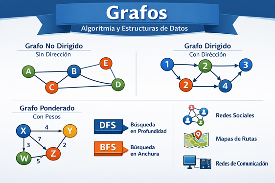
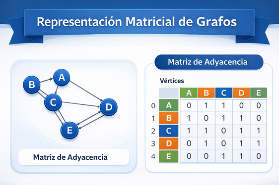
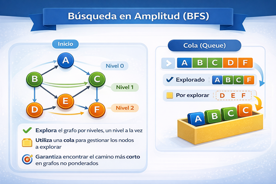
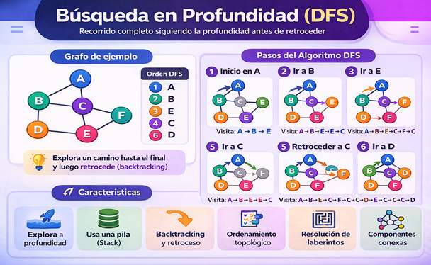
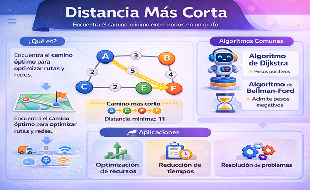
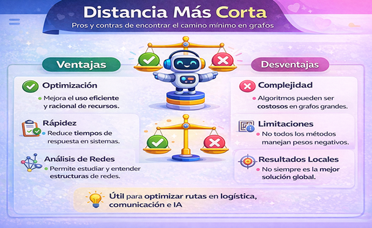
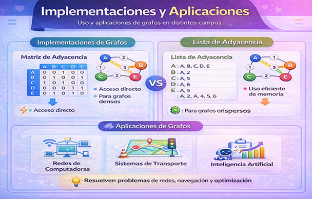
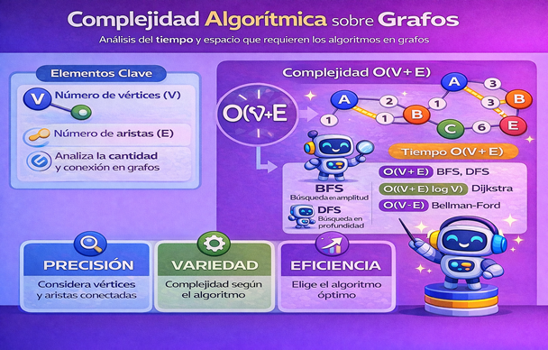

Figura 10
Grafos

Nota: Elaboración propia
Los grafos constituyen una de las estructuras fundamentales dentro de la algoritmia y las estructuras de datos, ya que permiten representar relaciones entre distintos elementos de manera flexible y no lineal. A diferencia de otras estructuras más simples, los grafos están formados por nodos (vértices) y conexiones (aristas), lo que facilita modelar situaciones donde los datos están interconectados, como redes sociales, sistemas de transporte o redes de comunicación. Esta capacidad de representar relaciones complejas los convierte en una herramienta esencial para comprender y analizar problemas del mundo real (Sedgewick & Wayne, 2011).

Las representaciones matriciales en grafos se basan en el uso de una matriz de adyacencia, donde las filas y columnas representan los vértices del grafo, y cada celda indica si existe o no una conexión entre dos nodos. En grafos no dirigidos, la matriz suele ser simétrica, mientras que en grafos dirigidos los valores pueden variar según la dirección de la arista.
Esta representación es especialmente útil cuando el grafo es denso, ya que permite verificar rápidamente si existe una conexión entre dos vértices en tiempo constante. Sin embargo, su principal desventaja es el alto consumo de memoria, ya que requiere un espacio de n2 posiciones, incluso si hay pocas conexiones (Cormen et al., 2009).

Las representaciones basadas en listas utilizan listas de adyacencia, donde cada vértice almacena una lista de los nodos a los que está conectado. Este enfoque resulta más eficiente en términos de memoria cuando el grafo es disperso, ya que solo se almacenan las conexiones existentes. Además, facilita recorrer los vecinos de un nodo de manera eficiente, lo que es clave en algoritmos como BFS y DFS. No obstante, comprobar si existe una arista específica puede ser más lento en comparación con la matriz. En conjunto, la elección entre ambas representaciones depende del tipo de grafo y de las operaciones que se requieran realizar (Goodrich et al., 2014).
Según Cormen et al., 2009, la búsqueda en amplitud (BFS, por sus siglas en inglés) es un algoritmo utilizado en grafos para recorrer o explorar todos los nodos de manera ordenada, comenzando desde un nodo inicial y visitando primero todos sus vecinos más cercanos antes de avanzar a niveles más profundos. Es decir, explora el grafo por “capas” o niveles, lo que permite analizar la estructura de conexiones de forma progresiva. Este método es ampliamente utilizado en problemas donde se requiere encontrar la distancia mínima en grafos no ponderados.

El funcionamiento de BFS se basa en el uso de una cola (queue) como estructura auxiliar. Primero se visita el nodo inicial, luego se agregan sus vecinos a la cola, y posteriormente se van procesando en el mismo orden en que fueron insertados. A medida que se visita cada nodo, se marcan como explorados para evitar repeticiones. Este proceso continúa hasta que todos los nodos alcanzables han sido recorridos, garantizando que los nodos más cercanos al inicio se visiten antes que los más lejanos.
Entre sus principales características, la búsqueda en amplitud garantiza encontrar el camino más corto en términos de número de aristas en grafos no ponderados, lo que la hace muy útil en aplicaciones como rutas, redes y juegos. Sin embargo, puede requerir mayor uso de memoria debido al almacenamiento de nodos en la cola. A pesar de ello, su simplicidad y eficiencia la convierten en uno de los algoritmos fundamentales en la teoría de grafos y en el diseño de soluciones computacionales (Goodrich et al., 2014).
La búsqueda en profundidad (DFS, Depth-First Search) es un algoritmo utilizado en grafos que explora los nodos siguiendo un camino lo más profundo posible antes de retroceder. A partir de un nodo inicial, el algoritmo avanza hacia uno de sus vecinos y continúa descendiendo por ese camino hasta que no puede avanzar más; en ese momento, regresa (backtracking) para explorar otras rutas disponibles. Este enfoque permite recorrer completamente un grafo o árbol, siendo muy útil para analizar su estructura (Cormen et al., 2009).
El funcionamiento de DFS se basa en el uso de una pila (stack), que puede implementarse de forma explícita o mediante recursividad. El algoritmo visita un nodo, lo marca como explorado y continúa con el siguiente, este proceso se repite hasta llegar a un nodo sin vecinos disponibles. Luego, el algoritmo retrocede al nodo anterior para explorar otros caminos pendientes. Este mecanismo de exploración permite recorrer todos los nodos alcanzables del grafo de manera sistemática.

Entre sus características, la búsqueda en profundidad es eficiente en memoria en comparación con BFS, ya que no necesita almacenar todos los nodos de un nivel. Además, es ampliamente utilizada en problemas como detección de ciclos, ordenamiento topológico y generación de laberintos. Sin embargo, no garantiza encontrar el camino más corto en grafos no ponderados. A pesar de ello, DFS es un algoritmo fundamental en la teoría de grafos por su simplicidad y versatilidad.
A continuación, se explican la funcionalidad de los grafos, búsqueda en amplitud y profundidad
La distancia más corta en grafos es un problema central en la algoritmia que consiste en determinar el camino óptimo entre dos nodos, ya sea minimizando el número de aristas o el costo total cuando existen pesos asociados. Esta noción permite modelar situaciones reales como rutas de transporte, flujo de información o conexiones en redes, facilitando la toma de decisiones eficientes dentro de sistemas complejos (Sedgewick & Wayne, 2011).
Para resolver este problema, se emplean algoritmos especializados como el algoritmo de Dijkstra, que permite encontrar el camino más corto desde un nodo origen hacia todos los demás en grafos con pesos positivos. Asimismo, el algoritmo de Bellman-Ford amplía esta capacidad al permitir trabajar con pesos negativos, lo que resulta útil en escenarios más complejos donde existen variaciones en los costos de las conexiones.

Desde el punto de vista funcional, estos algoritmos analizan múltiples rutas posibles y seleccionan aquella que minimiza el costo acumulado, garantizando resultados óptimos bajo ciertas condiciones. Este proceso implica comparar distancias, actualizar valores y recorrer el grafo de manera sistemática, lo que convierte al problema de la distancia más corta en una herramienta clave para la optimización computacional (Kleinberg & Tardos, 2006).
Por lo que la distancia más corta tiene aplicaciones directas en áreas como la logística, las telecomunicaciones, la inteligencia artificial y los sistemas de navegación. Su estudio permite mejorar la eficiencia en el uso de recursos, reducir tiempos de operación y resolver problemas complejos de manera estructurada. Por ello, es considerada una de las aplicaciones más relevantes de la teoría de grafos dentro de la ciencia de la computación.

Las implementaciones de grafos en algoritmia hacen referencia a la manera en que estas estructuras se representan dentro de un sistema computacional para poder ser manipuladas mediante algoritmos. Las formas más comunes son la matriz de adyacencia y la lista de adyacencia, cada una adecuada según el tipo de problema: la matriz facilita el acceso directo a las conexiones, mientras que la lista optimiza el uso de memoria en grafos dispersos. Estas representaciones permiten ejecutar de forma eficiente algoritmos fundamentales para el análisis de grafos (Weiss, 2014).
Sus aplicaciones, los grafos son utilizados en múltiples áreas como las redes de computadoras, donde modelan la interconexión de dispositivos; en sistemas de transporte, para encontrar rutas óptimas; y en bases de datos o redes sociales, para analizar relaciones entre entidades. Además, en el ámbito de la inteligencia artificial, los grafos son esenciales para resolver problemas de búsqueda, planificación y toma de decisiones en entornos complejos (Tanenbaum & Van Steen, 2007).

Es por ello que su funcionalidad de los grafos radica en su capacidad para representar y analizar relaciones entre distintos elementos mediante nodos y aristas. Esta estructura permite modelar sistemas complejos donde los datos no siguen un orden lineal, facilitando la implementación de algoritmos como BFS, DFS o Dijkstra para recorrer, buscar o encontrar rutas óptimas. Gracias a ello, los grafos permiten resolver problemas relacionados con conectividad, caminos mínimos y organización de datos de forma eficiente.
Los grafos permiten que los sistemas sean más inteligentes y eficientes, ya que pueden adaptarse a cambios y analizar múltiples posibilidades antes de ejecutar una acción. Esto es clave en áreas como la inteligencia artificial, donde los grafos ayudan a modelar conocimiento, o en sistemas distribuidos, donde optimizan la comunicación entre múltiples dispositivos. En conjunto, los grafos actúan como una base estructural que permite a los sistemas operar de manera organizada, dinámica y eficiente.
Las nociones de complejidad de los algoritmos sobre grafos se refieren al análisis del tiempo y espacio que requieren los algoritmos para procesar estructuras de grafos. Este análisis se expresa comúnmente mediante la notación Big-O, considerando el número de vértices (V) y aristas (E).
Se caracterizan por analizar el rendimiento en función de dos elementos principales: el número de vértices (V) y el número de aristas (E). Esto permite medir con mayor precisión el comportamiento del algoritmo en estructuras no lineales, donde las conexiones influyen directamente en el tiempo de ejecución. A diferencia de otras estructuras, en los grafos no solo importa la cantidad de datos, sino también cómo están interconectados, lo que hace que su análisis sea más completo y representativo.
La complejidad en grafos se distingue por su enfoque en la eficiencia y escalabilidad, lo que permite seleccionar el algoritmo más adecuado según el tamaño y la densidad del grafo. Esta característica es fundamental en aplicaciones reales, donde se manejan grandes volúmenes de información, ya que un análisis adecuado evita el uso excesivo de recursos y mejora el rendimiento general del sistema. Por ello, comprender estas nociones es clave para diseñar soluciones óptimas y eficientes en la práctica computacional (Kleinberg & Tardos, 2006).

A continuación, se explican la funcionalidad de los grafos distancia corta
Evalúa tu comprensión sobre colas y sus características.
Realizar Actividad